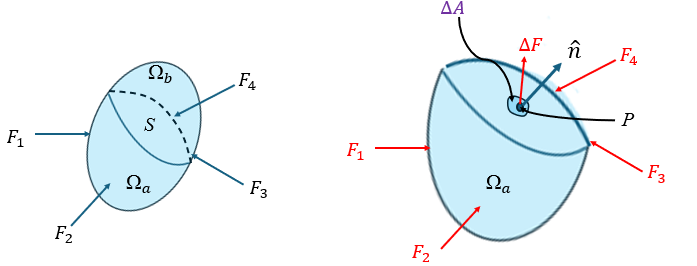
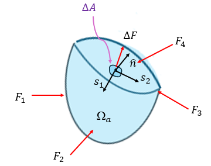
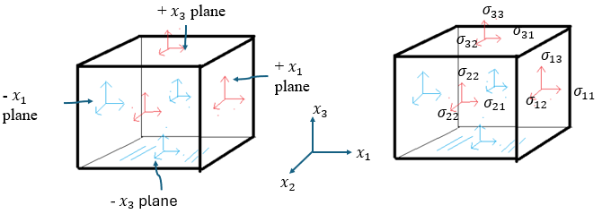
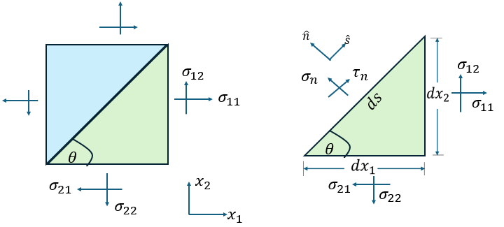
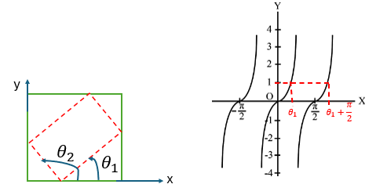
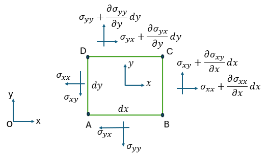
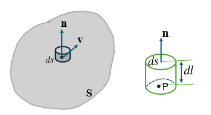

Chapter 4 Fundamental Equations of Continuum Mechanics
In the study of particle dynamics, a real object is often idealised as a particle with mass but no size or shape, and Newton’s laws are used to model its motion. If, however, we are concerned with the movement of material points inside a body together with the resulting deformation, stress, and possible failure, then the material must be treated as a continuum.
A continuum is an abstraction applied to a large collection of material particles. Its mass is assumed to be continuously distributed throughout the body, and the material deforms under the action of forces. Most common materials, including metals, liquids, and gases, can be modelled as continua with reasonable accuracy.
Continuum mechanics studies the behaviour of continua in space and time. This includes motion, deformation, stress, and failure, together with the effects of external forces and body forces. Because continua may be solids or fluids, the subject naturally divides into solid mechanics and fluid mechanics.
The basic physical quantities in continuum mechanics include velocity, strain, stress, temperature, and density. The governing equations include the stress equations of motion, geometric equations, the continuity equation, constitutive equations, and in more complete models the energy equation. In this chapter we introduce four of these core ingredients:
- stress and the stress equations of motion,
- strain and the geometric equations,
- the continuity equation,
- constitutive equations.
4.1 Stress and Stress Equations of Motion
Stress measures the intensity of the internal forces that develop within a body in response to applied loads. It is fundamental in structural mechanics, fluid mechanics, and many modelling applications in engineering and applied science.
In this section, we first introduce the concept of stress vector followed by the notations of stress components and sign convention. Then we show that the stress state at a material point can be characterised by the stress components on three coordinate planes; and then we derive, from Newton’s second law, the stress equations of motion governing the stress components.
4.1.1 Concept of Stress

Consider a body of material \(\Omega\) subjected to external loading. Let a surface \(S\) pass through an interior point \(P\) and split the body into two parts. If one part is isolated, the removed portion exerts a resultant force \(\Delta \mathbf{F}\) across a small area \(\Delta A\) surrounding \(P\).
The force \(\Delta \mathbf{F}\) is the internal force acting on the material across the surface \(S\). It is a vector quantity, and its direction is generally not normal to the surface. The force per unit area is called the stress vector.
The stress vector is defined by \[ \boldsymbol{\sigma} = \lim_{\Delta A \to 0} \frac{\Delta \mathbf{F}}{\Delta A}. \]
This gives the force per unit area acting at the point.
In general, the force is not normal to the plane. It can be resolved into one normal component and two tangential components. Accordingly, the stress vector has:
- a normal stress component, which is associated with tension or compression,
- two shear stress components, which are associated with change of shape.

To describe the stress state at a point, we usually refer to stresses acting on planes parallel to the coordinate planes. In rectangular coordinates, stress components are written with a double subscript:
- the first subscript gives the normal direction of the plane,
- the second subscript gives the direction of the stress component.
We may consider the force into three orthogonal components \(\Delta F_n\), \(\Delta F_{s1}\), and \(\Delta F_{s2}\), where \(\Delta F_n\) is normal to the area \(\Delta A\), and \(\Delta F_{s1}\) and \(\Delta F_{s2}\) are parallel to the area \(\Delta A\) but orthogonal to each other. Thus, we have
\[ \boldsymbol{\sigma} = \lim_{\Delta A \to 0} \left( \frac{\Delta F_n}{\Delta A}, \frac{\Delta F_{s1}}{\Delta A}, \frac{\Delta F_{s2}}{\Delta A} \right). \]
The component
\[ \sigma_n = \lim_{\Delta A \to 0} \frac{\Delta F_n}{\Delta A} \]
is in the normal direction and is thus called , while the components
\[ \sigma_{s1} = \lim_{\Delta A \to 0} \frac{\Delta F_{s1}}{\Delta A}, \qquad \sigma_{s2} = \lim_{\Delta A \to 0} \frac{\Delta F_{s2}}{\Delta A} \]
are parallel to the plane on which the forces are acting and are thus called .
Therefore, the stress vector on any plane passing through an arbitrary point in a body can be readily characterised by a normal stress and two shear stresses.
The stress vector is a function of the orientation of the plane on which it acts. For a given point, the stress vector varies with the orientation of the plane. The stress state at a point is defined by the stress vectors on all planes passing through that point.
Stress Components, Notation and Sign Convention
Through a point, there are infinite number of planes. In general the stresses acting on different planes passing through the same point are different. To characterize the stress state of a point, we usually use the stresses on planes parallel to the coordinate planes. For example, in the rectangular coordinate system, we use the stress components on the planes as shown in Figure 3. The stress components are denoted by \(\sigma_{ij}\), where the first subscript \(i\) indicates the normal direction of the plane, and the second subscript \(j\) indicates the direction of the stress component.

To easily identify the particular stress component, we use a double subscript notation:
- The first subscript indicates the normal direction of the plane on which the stress acts.
- The second subscript indicates the direction of the stress component.
The stress components on the \(x_1\)-plane are \(\sigma_{11}\), \(\sigma_{12}\), and \(\sigma_{13}\), where \(\sigma_{11}\) is the normal stress, and \(\sigma_{12}\) and \(\sigma_{13}\) are the shear stresses. Similarly, the stress components on the \(x_2\)-plane are \(\sigma_{21}\), \(\sigma_{22}\), and \(\sigma_{23}\), and the stress components on the \(x_3\)-plane are \(\sigma_{31}\), \(\sigma_{32}\), and \(\sigma_{33}\).
- When the material cube is shrunk down to an infinitesimal point, the planes of the cube can be considered as planes passing through the point.
- In Figure 3 (left), the planes perpendicular to the x\(_i\)-axis are called x\(_i\)-planes, and thus the differential cube has two \(x_1\) planes, two \(x_2\) planes and two \(x_3\) planes. To distinguish one x\(_i\) plane from the other, we call the one with outward normal in the positive x\(_i\) direction positive x\(_i\) plane, and the one with outward normal in the negative x\(_i\) direction negative x\(_i\) plane.
In continuum mechanics, the following Sign Convention is used. A stress component is positive if
it acts on a positive plane and points to the positive coordinate direction, or
it acts on a negative plane and points to the negative coordinate direction.
In all other cases, the stress component is negative.
e.g., in Figure 3, if a particular stress component is computed to have a positive value, then the stress component is acting in the direction as shown in the figure; or otherwise in the direction opposite to that shown in the figure.
A stress component is taken as positive if it acts on a positive plane in the positive coordinate direction, or on a negative plane in the negative coordinate direction.
4.1.2 Stress Relations at a Point
Different planes through the same point generally carry different stresses. However, once the stresses on the coordinate planes are known, the stresses on any other plane through that point can be determined.

Firstly, from Figure 4, we have the following relations:
the unit vector in the tangent direction is
\[ \hat{\mathbf{s}} = (s_1,s_2) = (\cos\theta,\sin\theta), \]
the unit vector in the normal direction is
\[ \hat{\mathbf{n}} = (n_1,n_2) = (-\sin\theta,\cos\theta), \]
and
\[ dx_1 = ds\cos\theta = n_2\,ds, \]
\[ dx_2 = ds\sin\theta = -n_1\,ds. \tag{1}\]
From Newton’s 2nd law, we have
\[ \begin{aligned} \sum F_n &= ma_n, \\ \sigma_{nn}\,ds + (\sigma_{11},\sigma_{12}) \cdot \mathbf{n}\,dx_2 + (-\sigma_{21},-\sigma_{22}) \cdot \mathbf{n}\,dx_1 &= \rho\,dx_1dx_2\,a_n/2. \end{aligned} \]
Using (1), the above equation becomes
\[ \sigma_{nn}\,ds - \sigma_{1j}n_j\,n_1\,ds - \sigma_{2j}n_j\,n_2\,ds = -\rho\,n_1n_2\,(ds)^2\,a_n/2, \]
which gives
\[ \sigma_{nn} - \sigma_{1j}n_j\,n_1 - \sigma_{2j}n_j\,n_2 = -\rho\,n_1n_2\,ds\,a_n/2. \]
When the differential element is shrunk down to an infinitesimal point, \(ds\) approaches zero and we thus obtain
\[ \sigma_{nn} = \sigma_{ij}n_j\,n_i. \tag{2}\]
Similarly, from
\[ \sum F_s = ma_s, \]
we can derive
\[ \sigma_{ns} = \sigma_{ij}s_j\,n_i. \tag{3}\]
In terms of the angle \(\theta\), (2) and (3) can be written as
\[ \sigma_{nn} = \sigma_{11}\sin^2\theta + \sigma_{22}\cos^2\theta - (\sigma_{12}+\sigma_{21})\sin\theta\cos\theta. \tag{4}\]
\[ \sigma_{ns} = (\sigma_{22}-\sigma_{11})\sin\theta\cos\theta - \sigma_{12}\sin^2\theta + \sigma_{21}\cos^2\theta. \tag{5}\]
Notes. The formulae, (4) and (5) with \((i,j=1,2,3)\), are applicable to the 3-dimensional stress field.
Therefore, the stresses on any plane passing through a point can be described in terms of the stress coordinate components. For the 2-D case, there will be four components required to completely define the stress state at a point, i.e.,
\[ \begin{pmatrix} \sigma_{11} & \sigma_{12} \\ \sigma_{21} & \sigma_{22} \end{pmatrix}. \]
For the 3-D case, there will be nine components required to completely define the stress state at a point,
\[ \begin{pmatrix} \sigma_{11} & \sigma_{12} & \sigma_{13} \\ \sigma_{21} & \sigma_{22} & \sigma_{23} \\ \sigma_{31} & \sigma_{32} & \sigma_{33} \end{pmatrix}. \]
For the two-dimensional case, suppose the stresses on the \(x_1\)- and \(x_2\)-planes are
\[ (\sigma_{11}, \sigma_{12}), \qquad (\sigma_{21}, \sigma_{22}). \]
The shear components are not all independent. In the absence of couple stresses, the stress tensor is symmetric:
\[ \sigma_{12}=\sigma_{21}, \qquad \sigma_{13}=\sigma_{31}, \qquad \sigma_{23}=\sigma_{32}. \]
4.1.3 Principal Stresses
(4) shows that the normal stress \(\sigma_{nn}\) on the \(n\)-plane depends on the angle \(\theta\). In many problems, for example material failure analysis, it is important to determine the maximum and minimum normal stresses. From (4), the plane on which the normal stress is a maximum or minimum can be determined by differentiating the equation with respect to \(\theta\) and setting the derivative equal to zero, namely
\[ \frac{d\sigma_{nn}}{d\theta} = 2\sigma_{11}\sin\theta\cos\theta - 2\sigma_{22}\sin\theta\cos\theta - 2\sigma_{12}\cos2\theta = 0, \]
which gives
\[ \tan2\theta = \frac{2\sigma_{12}}{\sigma_{11}-\sigma_{22}}. \]

Consequently,
\[ \theta_1 = \frac{1}{2} \arctan \left( \frac{2\sigma_{12}}{\sigma_{11}-\sigma_{22}} \right), \qquad \theta_2 = \frac{\pi}{2} + \theta_1, \]
which define two planes at right angle to one another. On one plane, the normal stress is a maximum and on the other a minimum. These two planes are called the principal planes, and the normal stresses acting on these planes are called the principal stresses.
The two solutions determine two orthogonal planes, called the principal planes. The corresponding principal stresses are
\[ \sigma_{1,2} = \frac{\sigma_{11}+\sigma_{22}}{2} \pm \left[\left(\frac{\sigma_{11}-\sigma_{22}}{2}\right)^2 + \sigma_{12}^2\right]^{1/2}. \]
These are the eigenvalues of the stress tensor.
4.1.4 Stress Equations of Motion
To determine the stress field, we require differential equations for the stress components. These follow from Newton’s second law: the time rate of linear momentum equals the total force acting on a material element.
For a continuum, the equations of motion in index notation are
\[ \frac{\partial \sigma_{ji}}{\partial x_j} + \rho X_i = \rho a_i, \tag{6}\]
where \(\rho\) is the density, \(X_i\) is the body force per unit mass, and \(a_i\) is the acceleration.
In the following, we will describe how to derive the above equations.
Consider a differential element in 2-D as shown in Figure 6. Suppose that the forces acting on the plane \(AD\) are \(\sigma_{xx}(x,y)\) and \(\sigma_{xy}(x,y)\). Then, based on the assumption of stress continuity, the forces on the plane \(CB\) are

\[ \sigma_{xx}(x+dx,y) = \sigma_{xx}(x,y) + \frac{\partial\sigma_{xx}}{\partial x}\,dx + O\!\left[(dx)^2\right], \]
\[ \sigma_{xy}(x+dx,y) = \sigma_{xy}(x,y) + \frac{\partial\sigma_{xy}}{\partial x}\,dx + O\!\left[(dx)^2\right]. \]
Similarly, we can obtain the forces on the plane \(CD\). Denoting the body force (force per unit mass) as \((X,Y)\) and the acceleration as \((a_x,a_y)\), then from Newton’s 2nd law, we have
\[ \sum F_x = ma_x, \]
\[ \begin{aligned} \sum F_x = &-\sigma_{xx}\,dy + \left( \sigma_{xx} + \frac{\partial\sigma_{xx}}{\partial x}dx \right)dy \\ &+ \left( \sigma_{yx} + \frac{\partial\sigma_{yx}}{\partial y}dy \right)dx - \sigma_{yx}\,dx + \rho X\,dx\,dy \end{aligned} \]
\[ ma_x = \rho\,dx\,dy\,a_x, \]
which yields
\[ \frac{\partial\sigma_{xx}}{\partial x} + \frac{\partial\sigma_{yx}}{\partial y} + \rho X = \rho a_x. \]
Similarly, by applying Newton’s second law to the differential element in the \(y\) direction, we obtain
\[ \frac{\partial\sigma_{xy}}{\partial x} + \frac{\partial\sigma_{yy}}{\partial y} + \rho Y = \rho a_y. \]
Further, from
\[ \sum M_o = 0, \]
we can derive
\[ \sigma_{xy} = \sigma_{yx}, \]
which indicates that the stress tensor is a second-order symmetric tensor.
4.2 Strain and Geometric Equations
The equations of motion alone are not enough to determine all unknowns in a continuum problem. We also need equations describing deformation.
When external forces act on a body, material points are displaced and the body may change both size and shape. These effects are measured by the strain components.
Consider a two-dimensional displacement field
\[ u = u(x,y,t), \qquad v = v(x,y,t), \]
where \(u\) and \(v\) are the displacements in the \(x\)- and \(y\)-directions respectively.

Then, from the continuum assumption, the displacement of point \(B\) is
\[ u_B = u(x+dx,y,t) = u(x,y,t) + \frac{\partial u}{\partial x}dx = u_A + \frac{\partial u}{\partial x}dx, \]
\[ v_B = v_A + \frac{\partial v}{\partial x}dx. \]
and the displacement of point \(D\) is
\[ u_D = u(x,y+dy,t) = u(x,y,t) + \frac{\partial u}{\partial y}dy = u_A + \frac{\partial u}{\partial y}dy, \]
\[ v_D = v_A + \frac{\partial v}{\partial y}dy. \]
As \(d\beta\) is small, the of the line \(AB\) is
\[ \Delta(dx) = u_B-u_A = \frac{\partial u}{\partial x}dx, \]
and thus we can define the following normal strain to measure the change in size in the \(x\)-direction of the object.
4.2.1 Normal strain in the \(x\)-direction
The change in the length of \(AB\) divided by its original length, representing the change in length per unit length in the \(x\)-direction, is known as the normal strain in the \(x\)-direction and can be determined by
\[ \varepsilon_{xx} = \frac{\dfrac{\partial u}{\partial x}dx}{dx} = \frac{\partial u}{\partial x}. \tag{7}\]
4.2.2 Normal strain in the \(y\)-direction
Similarly, the normal strain in the \(y\)-direction measures the change in length per unit length in the \(y\)-direction and can be determined by
\[ \varepsilon_{yy} = \frac{\partial v}{\partial y}. \tag{8}\]
From Figure 7, the change of shape can be measured by the change of angle from the original right angle at point \(A\), i.e.,
\[ \gamma_{xy} = d\theta+d\beta = \frac{\partial u}{\partial y} + \frac{\partial v}{\partial x} = 2\varepsilon_{xy}. \tag{9}\]
which is called the angular or shear strain.
The strain–displacement relations (7)–(9) are called geometric equations and can be expressed in index notation by
\[ \varepsilon_{ij} = \frac{1}{2} \left( \frac{\partial u_i}{\partial x_j} + \frac{\partial u_j}{\partial x_i} \right). \tag{10}\]
Notes. The above equations are also applicable to the three-dimensional case for which \(i,j=1,2,3\).
These formulae also apply in three dimensions.
In summary:
- normal strains measure change in size,
- shear strains measure change in shape,
- strain components are determined from the displacement field by the geometric equations.
4.3 The Equation of Continuity
The continuity equation expresses conservation of mass. Since mass can neither be created nor destroyed, the density and velocity fields in a continuum must satisfy
\[ \frac{\partial \rho}{\partial t} + \operatorname{div}(\rho \mathbf{v}) = 0. \]
To derive this equation, consider a fixed control volume \(\Omega\) with closed boundary surface \(S\) and outward unit normal \(\mathbf{n}\). If the fluid velocity is \(\mathbf{v}\), then the outward normal component is
\[ v_n = \mathbf{v}\cdot\mathbf{n}. \]

Consider a closed surface \(S\), fixed in space, enclosing a fixed volume \(\Omega\) as shown in Figure 8. Let \(dS\) be a differential surface element (on \(S\)) with area \(dS\) and an outward unit normal vector \(\mathbf{n}\), and let the velocity of the fluid on the element is \(\mathbf{v}\), then the velocity component in the outward normal direction is \(v_n = \mathbf{v}\cdot\mathbf{n}\).
In a unit time, the fluid originally on the surface element \(dS\) will move a distance \(dl=\mathbf{v} \cdot\mathbf{n} = v_n\) in the outward normal direction, and thus the volume of the fluid flowing out of \(\Omega\) is \(dV = v_n \, dS\) (i.e., the volume of the cylinder with cross-section area \(dS\) and length \(dl=v_n\)).
The mass flow rate out through a differential surface element \(dS\) is
\[ dQ = \rho v_n \, dS = \rho \, \mathbf{v}\cdot\mathbf{n} \, dS, \]
so the total mass efflux is
\[ Q = \iint_S \rho \, \mathbf{v}\cdot\mathbf{n} \, dS. \tag{11}\]
The rate of decrease of mass within \(\Omega\) is
\[ -\iiint_\Omega \frac{\partial \rho}{\partial t} \, d\Omega. \tag{12}\]
Equating outflow with the rate of decrease of mass gives
\[ -\iiint_\Omega \frac{\partial \rho}{\partial t} \, d\Omega = \iint_S \rho \, \mathbf{v}\cdot\mathbf{n} \, dS. \tag{13}\]
Applying the divergence theorem,
\[ \iint_S \rho \, \mathbf{v}\cdot\mathbf{n} \, dS = \iiint_\Omega \operatorname{div}(\rho \mathbf{v}) \, d\Omega, \]
and since \(\Omega\) is arbitrary, the differential form follows:
\[ \frac{\partial \rho}{\partial t} + \operatorname{div}(\rho \mathbf{v}) = 0. \]
For an incompressible material, \(\partial \rho / \partial t = 0\), so the continuity equation reduces to
\[ v_{i,i} = 0. \]
4.4 Constitutive Equations
Sections 4.1 Stress and Stress Equations of Motion – 4.3 The Equation of Continuity provide the equations of motion, geometric relations, and continuity equation, but these do not yet specify how a given material responds to deformation. That information is supplied by the constitutive equations.
In general,
\[ \sigma_{ij} = f_{ij}(\text{history of deformation},\ \text{history of temperature}). \]
Different materials require different constitutive laws. Two important idealised models are the Newtonian fluid and the Hookean elastic solid.
Newtonian Fluid
For an isotropic Newtonian fluid,
\[ \sigma_{ij} = -p\delta_{ij} + \lambda d_{kk}\delta_{ij} + 2\mu d_{ij}, \tag{14}\]
where
\[ d_{ij} = \frac{1}{2}(v_{i,j} + v_{j,i}) \]
is the rate-of-deformation tensor, \(p\) is the pressure, and \(\mu\) is the coefficient of viscosity.
For incompressible fluids, \(d_{kk}=0\), so
\[ \sigma_{ij} = -p\delta_{ij} + 2\mu d_{ij}. \]
In component form,
\[ \sigma_{xx} = -p + 2\mu\frac{\partial u}{\partial x}, \, \sigma_{yy} = -p + 2\mu\frac{\partial v}{\partial y}, \, \sigma_{zz} = -p + 2\mu\frac{\partial w}{\partial z}, \tag{15}\]
\[ \sigma_{xy} = \mu\left(\frac{\partial u}{\partial y} + \frac{\partial v}{\partial x}\right), \, \sigma_{yz} = \mu\left(\frac{\partial v}{\partial z} + \frac{\partial w}{\partial y}\right), \, \sigma_{zx} = \mu\left(\frac{\partial w}{\partial x} + \frac{\partial u}{\partial z}\right). \]
Hookean Elastic Solid
A Hookean elastic solid obeys a linear stress-strain relation:
\[ \sigma_{ij} = C_{ijkl}\varepsilon_{kl}. \]
For an isotropic elastic solid, Hooke’s law becomes
\[ \sigma_{ij} = \lambda \varepsilon_{kk}\delta_{ij} + 2\mu\varepsilon_{ij}, \]
where \(\lambda\) and \(\mu\) are the Lam'e constants.
In particular,
\[ \sigma_{xx} = \lambda(\varepsilon_{xx}+\varepsilon_{yy}+\varepsilon_{zz}) + 2\mu\varepsilon_{xx}, \]
\[ \sigma_{xy} = 2\mu\varepsilon_{xy}, \]
and similarly for the remaining components.
Exercises
- Label the stress components acting on a differential element in two dimensions.
- For a point \(P\) in a two-dimensional stress field, explain the meanings of \(\sigma_{xx}\), \(\sigma_{yy}\), \(\sigma_{xy}\), \(\sigma_n\), and \(\sigma_{ns}\), where \(\mathbf{n}\) is the unit normal to a plane.
- What is meant by the stress state of a point? List the components required to define it in two dimensions.
- Given a two-dimensional stress field, determine the principal stresses and the directions of the principal planes.
- Write down the equations of motion in both index notation and unabridged notation.
- Test whether a prescribed stress field is in equilibrium when no body force is present.
- Explain the meanings of \(\varepsilon_x\), \(\varepsilon_y\), and \(\gamma_{xy}\), and derive their expressions in terms of the displacement components \(u(x,y)\) and \(v(x,y)\).
- State the principle behind the continuity equation and write its differential form for both compressible and incompressible materials.
- For an incompressible fluid with two known velocity components, determine the third velocity component from the continuity equation.
- Write the constitutive equations for compressible and incompressible Newtonian fluids in both index and component form.
- Rewrite isotropic Hooke’s law in terms of the elastic constants \(E\), \(\nu\), and \(G\).